Shoutouts
Shoutout to “The Quant” for winning the roomba naming contest. Going forward my roomba’s name is “Esmerelda”.
Shoutout to “Top of the Rope” for landing an awesome new job at a better company for more $$. Very excited for you!
Monday
Once I finished exchanging my time for the means to buy goods and services I had a quick consultation call with “Sergeant Sassy” about ways I could improve the interior design of my apartment.
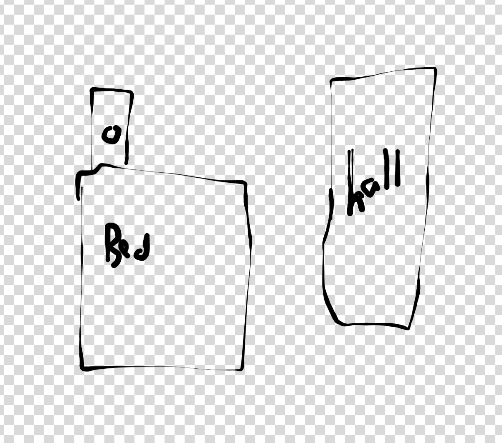
For one I was suggested I should move my bed so it isn’t blocking one of the doors to my walk in closet. I still have another door in the hall so I can get in there but it looks better if it’s not blocking.
For another I should put my shoes on the shoerack I have or in her words “Give my shoes a home”. To be honest my shoes already don’t pay rent on my apartment and have a roof over their head and a lot of stimulation so I think they’re stepping good the entitled bums. But nevertheless I guess if it makes for better optics I can let them stay on the shoerack.
Then I had dinner with “The Fisherwoman” where I helped her finish some of “The Awepartment’s” leftover chili. It was quite good, maybe I should make chili one of the next dishes I try to cook.
Tuesday
After I cycled between terminal -> Cursor -> Slack for another shift I went to go play spikeball with “The Spikeballer” and some other folks. I met someone who grew up in France and one of my first questions was how the croissants compared to here. According to her, she won’t pay more than 3 euros for a croissant. Arsicualt is good and she can respect the craftsmanship but she is not waiting in line for one. She also said French food in the US is typically high gastronomy. Bread is good here but she is used to paying a couple euros for bread. I guess put another way there isn’t a good scene for more “typical” French food. To be honest I don’t eat a lot of French food myself and have mainly heard of fancier places so I can somewhat corroborate this.
Wednesday
When I finished up at the mines I caught up with “Top of the Rope”. She crushed her onsite interview which coincidentally was right near where I work so we went on an impromptu walk around the Mission where she told me more about the onsite.
Afterwards I had dinner with “The Raja of Rhythm” at Rasa Rasa kitchen. If y’all haven’t been I highly recommend it. The Indonesian food there slaps. The beef rendang is highly recommended. It was fun hearing about his trip to Banff and sharing thoughts about being software engineers post AI tools. One thing he mentioned is the danger of feeling like you don’t really understand what you are building and only interacting with the code through a small window. Even setting aside issues of AI slop generated code, it feels a lot less fulfilling when you can’t actually defend the code or what it’s doing. At the moment, while AI is certainly very useful if I don’t have a good understanding of what to do and what is generally happening in my system I can’t use AI effectively to help write good code, so I have that push to stay closer to the ground. I wonder what will happen when that ceases to be true and time spent understanding the code is truly just a waste of time. That may be the watermark for when AI has truly taken my job and I have to consider backup forms of employment.
Later, I went to bar night and caught up with “The Mosher,” “That’s nuts,” and “The Orchestra,” and “The Twitch Streamer”. “The Orchestra” brought up a hypothetical question of “If someone is shooting at you outside where do you run?”. Originally I said a cop station only for him to respond that you might get shot at by the cops. “The Mosher” brought up an army base then the question becomes how do you get into the army base? From what I remember the correct answer was supposed to be inside your apartment. I then wondered what would happen if the shooter tried to shoot down the door possibly by going for the hinges. “The Orchestra” had some sort of response to that but I don’t quite remember what it was.
Also at one point “That’s nuts” said she needed to disengage from the conversation to work on a diff or as I put it she needed to diffengage. I’ll admit that wasn’t particularly noteworthy but I liked the pun.
Thursday
Once I shuffled the tokens into the KV caches I went home and … did nothing. When I say nothing I don’t mean I chilled and went on reddit or watched TV for a couple hours. I mean I literally did nothing. I wanted to see what it would be like to truly do nothing and how I would feel about it. And it felt … surprisingly good. I enjoyed it more than doomscrolling that’s for sure. It felt relaxing being by myself with my thoughts. I wouldn’t say I had some long term epiphanies or anything but it was surprising that I didn’t hate it like I thought I would. Granted I would still rather be doing more outgoing things but it was certainly an interesting experiment.
I later learned that downtown first thursdays was happening and right at the moment I definitely felt a twinge of “Oh man I wish I did that instead”, but in the long term this was probably the more interesting thing.
Friday-Saturday
Today I set out to beat my record of the longest walk I ever did. For context back in episode 19 https://trashtalesnewsletter.github.io/trash_tales_newsletter/posts/episode-19.html I walked 45 miles in 19 hours. My goal here was to walk for 24 hours and see how that would go.
Phase 1 - This is great
I leave my place at around 8:30 in the morning. I’m feeling great, like I can tackle the world. I first stop by Cafe Spro to get my favorite (overpriced) almond butter toast. Then I head over to Chinatown to meet up with “The Quant”. Together we head to the Ferry Building and walk along the Embarcadero and get some food at In-N-Out. We then head to the Marina and around to Land’s End to help “The Quant” sell one of his Chinese Pokemon cards to someone. As a side note, if any of y’all are in the market for a Chinese Pokemon card let me know I have a merchant who is great at procuring them.
We then keep walking from Land’s End over to Haight Ashbury where “The Quant” stops for launch while I keep stomping in my place ever so slightly above my seat to keep the walk going. From there we head to the Mission and I get some boba and then we keep going and make some loops around. The Argentina vs Cabo Verde game is going on at this time and I REALLY want Argentina to eat shit and lose. After getting to roughly 36k steps for “The Quant” he decides to tap out and head home. He did a great job though and as an aside he is currently competing in some company step challenge and his coworkers were so surprised he got 36k steps today that they assumed he was faking it somehow. At this point I’m at Mile 24 or so of this walk and I’m still feeling great.
Once he left I kept pacing around the Mission for a while killing time for “The Writer’s” party. There is a spot around here called Noe Valley donuts that is open 24 hours; I went there during the last long walk with “The Philosopher” and “The Juggler” and got some Ito Ens here. I stopped by and saw no Ito Ens. Put a pin in that we’ll get back to that later.
For now once I finish killing time I head over to “The Writer’s” party. One thing I really appreciate about his parties is that he has these small scavenger hunts around his apartment where you have to look for clues. Things that point you to specific nooks and crannies of his shelves. In usual Humza fashion I’m the first one there and I finish getting all the clues before pretty much anyone else shows up which is why I’m convinced that at least 2% of why he does this is to give me something to do while he finishes cooking food. Shoutout to the clue that had us look at the Trafalgar Law figurine. As a One Piece fan I’m really here for it. Soon the party gets in full swing and we have “Hell yeah,” “The Fisherwoman,” “The Boxer,” and other folks show up. During the party I keep stomping in place to keep the walk going. Someone asked if I was ok and thought I had a neuro disorder before explaining the bit to them. I realize I probably looked weird during that party but this is a bit worth committing to so I’m ok with some strangers thinking I’m weird. I gave “The Fisherwoman” a bit of help as she went through the clues for the scavenger hunt and I talked with some other people including someone who helps sell cars on the side which I think is fun.
At one point I did realize that even though I am walking for 24 hours I’m not getting much distance just stomping in place so I leave the party a bit early to get the most out of this bit. I feel a bit bad but if I’m gonna do this I should go all the way. That being said “The Fisherwoman” did want me to walk her home so I do more laps around the Mission until we both head off. Once I drop her off I head off to The Embarcadero which brings us to …
Phase 2 - The Wall
When I’m by myself I realize that night is truly upon me. To be honest this was the part of the walk I was dreading the most as I am afraid of either getting tired or something happening. I developed a sub goal of making it until sunrise thinking that the shift would greatly boost me psychologically. As I walk along the Embarcadero the fatigue starts to set in. For a bit of context right now I’m around Mile 40 on this walk and now I can start to feel it a bit. I’m not feeling so bad that I have to slow my pace down but it is starting to hit. At the same time unfortunately two more problems arise, I am tired and hungry. When I get to Fisherman’s wharf it is 1 in the morning. I look around and see what’s open. There is an In-N-Out, and a Taco Bell. At this point I need to use a restroom and opt for neither instead looking to go to Mel’s over in the Marina. This was how I learned though that the Taco Bell in Fisherman’s Wharf is open until 3 in the morning if any of y’all find that useful.
I can feel my pace slow down now as I head towards the Marina only to find that the Mel’s is CLOSED PERMANENTLY. This sucks. I keep trudging along until I hit Lombard and Fillmore and I sit on a bus stop seat for 10 minutes. In long distance running one thing they warn you about is the saying “Beware the chair”. If you stop for even a little bit while tired, getting back up leads to your body stiffening and losing a lot of energy. Well that happened to me. When I got back up I felt like shit. I looked around and saw a cold empty cityscape and asked myself if I should even continue this walk. I could just Uber home and get some sleep. I seriously thought about it for a moment but told myself I could keep going. This wasn’t the end. I told myself that since my goal was just to keep going for 24 hours regardless of distance it’s ok to go slow. Just go step by step. One step at a time. I don’t have to go fast.
Phase 3 - Step by Step
I do exactly that for a good long while. As I leave the Marina I start to harden my resolve some more. If I can just keep going one step at a time I can finish this thing. I switch from music to longer form content and just kinda relax. It still feels weird being the only one awake walking through what appears to be a ghost town but I manage. I give myself an explicit rule that I’m not allowed to jay walk. I think at some level jay walking requires at least somewhat good sprinting skills to be able to avoid cars and given the state of my legs I am NOT sprinting right now.
I walk back along Divisadero street trying to find a place to get a drink. Sadly everything is closed at this point, even the gas station stores. I wonder what all I can do until I remember that I have an apartment which is accessible to me 24/7 and I have some protein shakes in there. I make it back there around 3:30, wolf down a protein shake, take another for the road, and head back out. Then I pace through Panhandle for a while making loops back and forth. I debated striking up conversation with the other person out at this hour playing fetch with their dog but opted against it since (and I’m not proud of this), my stranger danger sense was more on edge now than usual.
At this point it’s about 4 in the morning. Roughly 4 and half hours left until this damn thing ends. By coincidence “The Professor” texts something in a group chat and I happen to respond. He asks why I’m up at this hour. Originally I was planning to not tell him and many others about the walk until I finish it but when he asks if everything is ok since I am up so early (or late) I tell him and he generously offers to call. It’s nice to have a conversation to take my mind off this walk and we catch up. He and his lab are close to putting out their first paper at “The Professor lab” (sadly it’s not actually called that), which is quite exciting! He gives me some advice about good books to read that could be a fun solo hobby which I’ll admit I haven’t followed up as much on but when I do I may start with a book he likes called The Anti memetics division.
Once the call ends I keep going and find my way to Duboce park. I could start to hear birds chirping and I could feel as if life was coming back around me.
Phase 4 - It was supposed to be darkest before the dawn
As we hit 5 in the morning I start to see light come through. Originally I thought this would be the home stretch as with everything feeling better I would have more energy and get a psychological boost. But sadly this was when I started getting tired as fuck. Remember earlier when I said the Happy Donut didn’t have Ito Ens? Yeah I really should have not been a dumbass and gotten some tea or something to help with this part (I don’t drink coffee fwiw). I was feeling really tired in a way I wasn’t before. If I closed my eyes for even a second I was worried I might just doze off right then and there. As I’m leaving Duboce park I see a parked motorcycle and I swear I could see someone nearby about to get up on it or kick the kickstand or something. Getting closer I see no such person, only the motorcycle which had me a bit worried I might start seeing things due to the sleep deprivation. Thankfully this doesn’t continue though but for a split second I was legitimately worried about that.
Around 6 in the morning I make it to Mission and I have a goal of staying there til at least 7 so I can get another almond butter toast from my favorite place, the one I went to right at the start of the walk. 7 somehow comes as I shuffle my way through Mission and I go get a toast.
As this is happening I feel myself dissociating hard. To set the stage a little bit right now it’s me and two employees in the store. Then some other person comes in and starts speaking only in Spanish and nobody there can understand him. The employees try to understand what he is saying but can’t. They ask him if he wants something and he just responds in more Spanish. At this point they tell him if he’s not gonna buy something he needs to leave. As this exchange repeats I find myself having a hard time paying attention and asking myself “Should I be doing something here?” “If I should do I have the mental capacity to do it?”. Thankfully the person did wind up leaving and aside from what seemed like a slightly tense moment nothing really bad happened.
Eventually the walk came to an end. Not with some sort of grand sense of achievement but with a realization I made it to 8:30AM the next Saturday and achieved my goal.
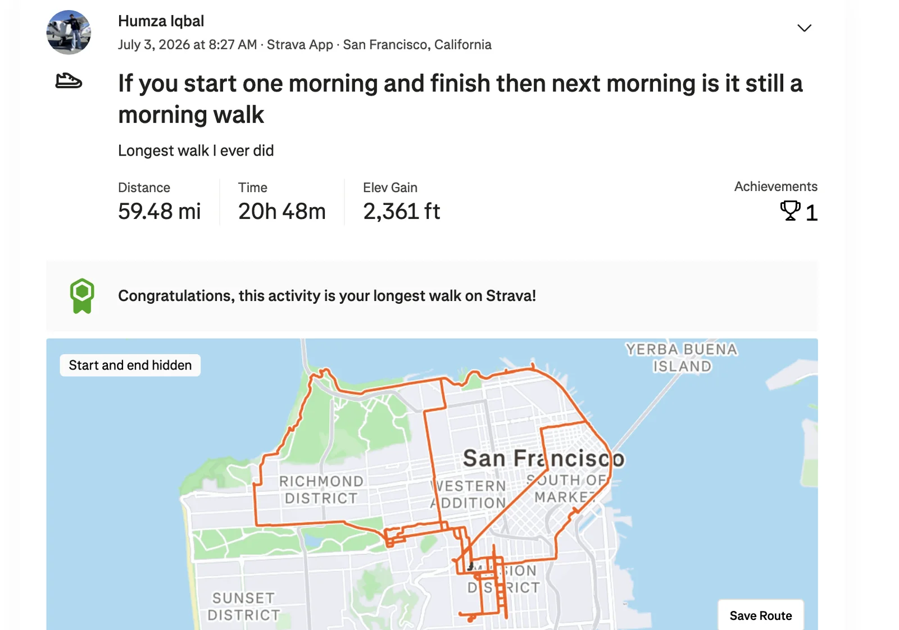
I did pause the strava a couple times but in the end this is what we got. Over 24 hours I walked about 60 miles which I think is pretty good. I don’t know if I’ll ever do a walk this long again. If I do the two things I’ve learned are to actually have some caffeine and food on you and not depend on stores being open, and to come up with a plan for chaffing. I didn’t mention it throughout but that was painful.
That being said this was an idea I’ve thought about for almost a year now so I’m glad I finally did it. This does feel like a pretty big accomplishment that may border on insanity but here we are. And in case anyone is curious here is what the step count looks like for this bad boy
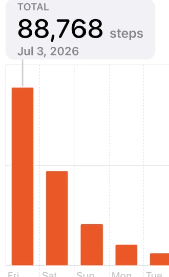
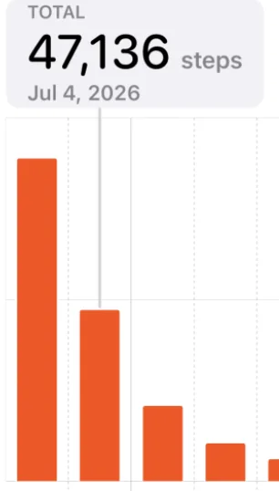
Originally my goal was to finish the walk, hang out until trash pickup, and then head home. But I was so tired I just immediately went home and laid down on my bed. I still briefly toyed with the idea of going to trash pickup but “Granola Girlie” brought up a good point that I should just sleep because I may have accumulated some toxic metabolites that normally get eliminated during sleep. So then I just crash for a few hours. I wake up later and just stay in bed the rest of the day.
I got an invite from “The Historian” to go see the 4th of July fireworks but when I stand up I realize I am not walking around. There was a small part of me that was bummed about missing the fireworks but I figured, considering I finally achieved my goal I thought “What am I more likely to remember a week, a month, or a year from now?” and realized odds are I’m probably not remembering these fireworks.
Sunday
I went home this morning to go see my family. I had some cousins in town (about my age) and my parents were pretty adamant I come and see them. For a bit of context I don’t see my extended family very often and I don’t feel very close to … any of them actually. I was never the type to go see my cousins every summer or something like I know a lot of people do. As a result I didn’t form any particular connection and I wasn’t the most enthusiastic about carving time out of my schedule to go see them. My Mom told me I was likely to have a lot in common with them and I asked like what? She mentioned the fact that we’re all Pakistani and the fact that we may have stories about relatives. I found these somewhat weak but I figured keeping an open mind is good so I went and met up with them and all in all it was pretty good.
The cousin about my age is about to start med school which is exciting. He's nice and easy to talk to. I wouldn’t say we suddenly hit it off and became best friends just like that because of some sort of latent commonality connection but it was still pretty nice. Also I learned my uncle works in the army on IT stuff and has gotten to drive a Stryker which is pretty sick.
We have breakfast together and then I show them around and we go for a walk along the Marina. Thankfully by this point my legs have recovered to the point where I can do 20K steps today and it’s not bad.
Afterwards I head out and go to “The North Bay Trasher’s” Venezuelan independence day party. He’s not Venezuelan mind you but I do enjoy the idea of celebrating the fact that Venezuela declared independence on the 5th of July. It turns out one of the people there is a coworker of “The Juggler” which is fun. And he also flies. What are the odds. Man this makes me want to get back into flying. As a result I booked another flying lesson. I just have to schedule it. I also met a guy who works a normal job in tech but on the side is in a band that will be touring in Ireland which is incredible. I kinda assumed if you were touring in a band you wouldn’t be working a tech job but maybe it’s a more lowkey tour. Just as I was leaving the party I saw “The Notetaker” who has been recovering well from the liver donation. Sadly he said it will still be a while before he is back at trash pickup (understandably so), but I am glad I was able to see him.
I then go to Whole Foods to get some stuff for a cooking lesson I’m giving “The Yogi”. She said she is looking to get more into hosting and I offered to teach her how to make the Plov I made with “The Philosopher” and “The Awepartment” a while back. They say the best way to learn is by teaching right? The lesson went quite smoothly and now I’m excited to say I have passed on this Plov recipe to another person and it turned out quite nice! We’re joined partway through by “Granola Girlie” who sadly can’t eat the plov due to being vegan but provided great vibes as we were waiting for it to simmer for a while.
Personal training progress for the week
Charts below show progress over time for each exercise from the 6/25/2026 workout. The metric is average load per rep across the logged sets, which normalizes progress instead of adding all three sets into total volume.
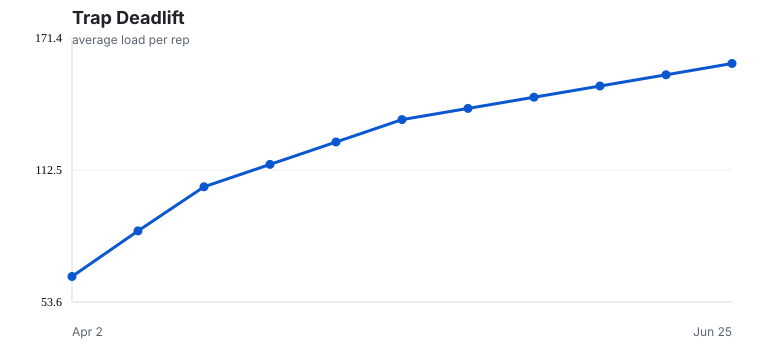
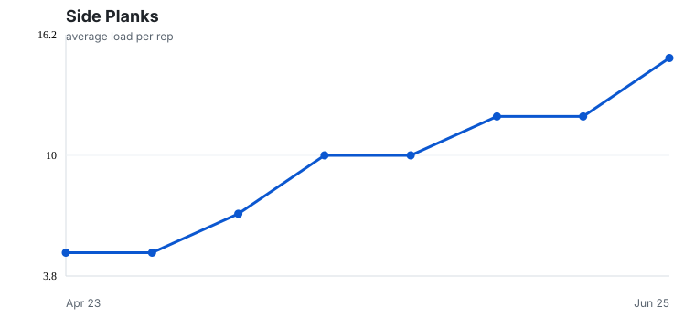
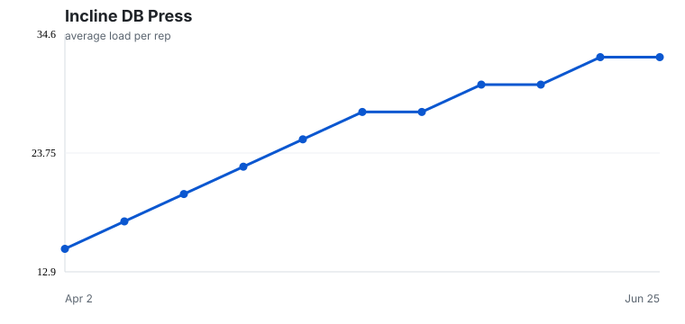
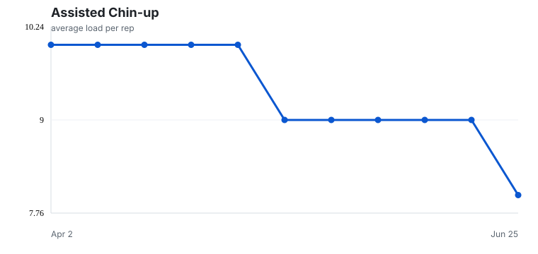
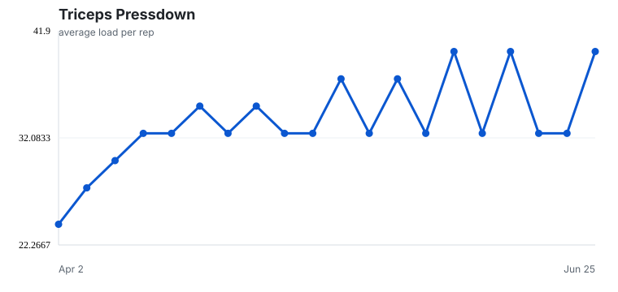
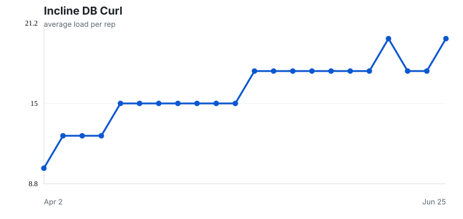
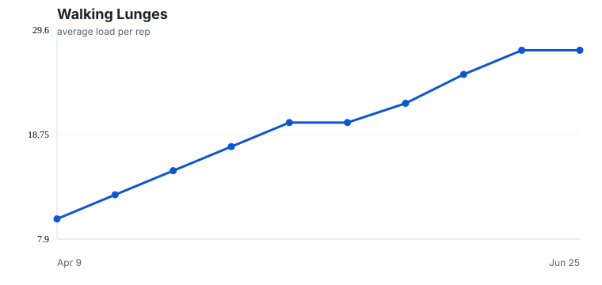
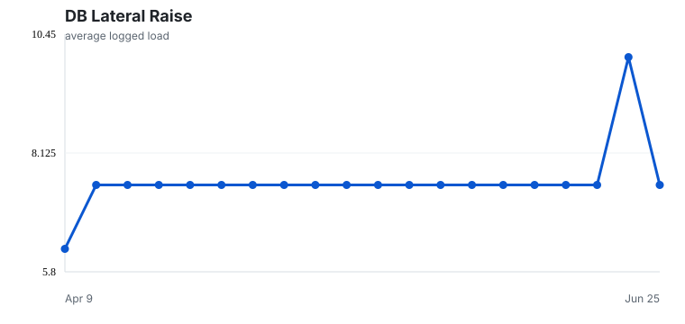